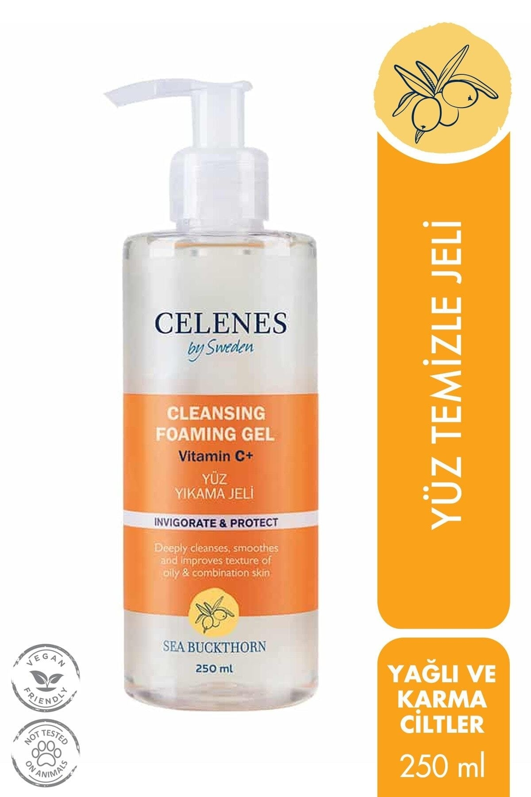
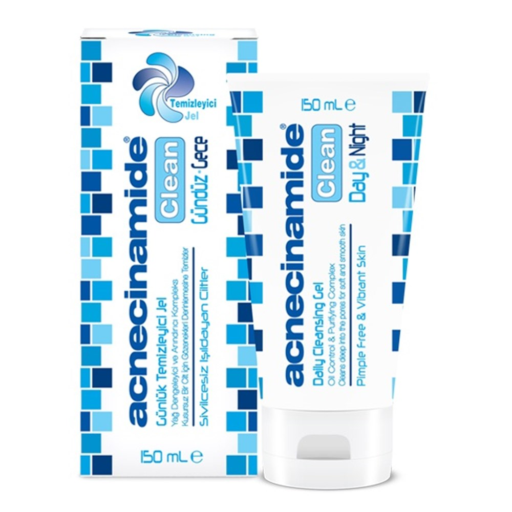
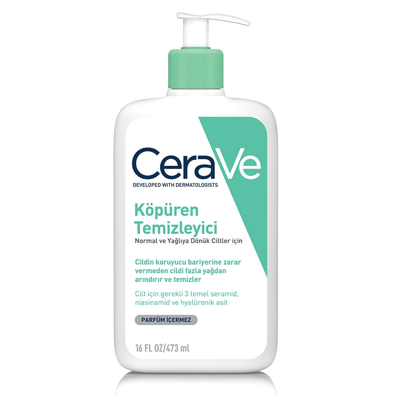
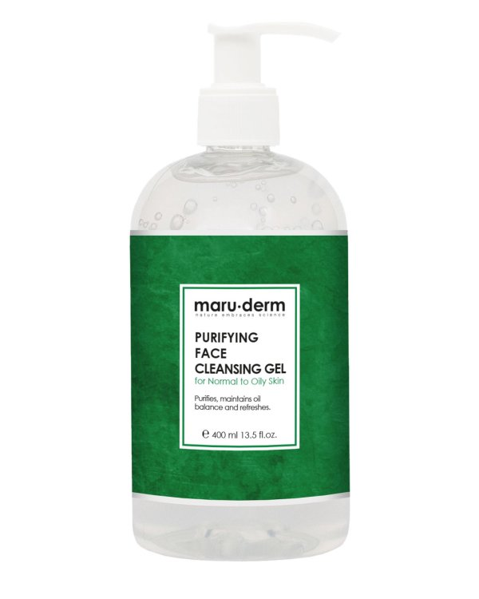

Cilt Temizliği
İdeal bir cilt temizleyici nasıl olmalıdır?
Cildimiz hava kirliliğinden, nemden, yüzümüzü yıkadığımız kireçli sulardan, makyajdan etkileniyor. Dolayısıyla ben sadece su ile yıkamak yerine bir temizleme ürünü ile temizlenmesini daha uygun buluyorum. Cilt tipine göre günde 1-2 defa temizlenmelidir.
Pekiii temizleme ürünü alırken nelere dikkat etmemiz gerekir.Bunlardan bahsedelim. İdeal bir cilt temizleyicisinin cildin bariyer işlevini korurken istenmeyen mikroorganizmaları ortadan kaldırması gerekir. Bu yüzden dikkat etmemiz gereken iki şey vardır:
- pH'ın cilde uygun olması
- Cilde uygun bir sürfaktan seçilmesi
Cildimizin ph'ı 5.5tir. Cildimize uygulayacağımız ürünün pH'sinin cildimize yakın olması son derece önemlidir. Yapılan araştırmalarda 4-7 arasında bir değer öneriliyor.Ayrıca yapılan araştırmalarda deriyi sadece su ile ya da pH değeri yüksek bir yüz yıkama jeliyle yıkamak cilt pH'sinde artışa sebep olduğu görülmüştür. Cilt pH'sinin artmasıyla da ciltteki asit mantosuna zarar verir. Bu asit mantonun zarar görmesi ise cilt bariyerini bozarak cildi hassaslaştırabilir, dermatit vs gibi türlü hastalıklara davetiye çıkarabilir. Ayrıca epidermisin en üst tabakası olan stratum corneumda bulunan ve belirli bir ph aralığında çalışan enzimler ve mikroorganizmalar, cilde uygun ph aralığında ürün kullanılmadığında işlerini iyi yapamaz hale gelirler. Bu da akne lezyonlarında artışa sebebiyet verebilir.
Sürfaktan ya da yüzey aktif madde; cilde yapışan kir ve döküntülerin, cilt üzerinden uzaklamaşını sağlayan kimyasal bir maddedir.
| Yüzey Aktif Maddeler | Tanımı | Çeşitleri |
| Katyonik Yüzey Aktif Maddeler | + yüke sahip sürfaktanlardır.Zıt kutupların birbirini çekmesinden dolayı ciltteki yağı,kiri söküp atar. Ancak bir süre sonra cilt bariyerine zarar verilebilirler.Tahriş ediciliği yüksektir.Mikroorganizmalara karşı koruyucu etkisi vardır. Bu yüzden deterjanlarda, tıbbi aletlerin dezenfekte edilmesinde, şampuanlarda kullanılır. | Benzalkonyum, Setrimid, Amin tuzları |
| Anyonik Yüzey Aktif Maddeler | - yüke sahip sürfaktanlardır.Zıt kutupların birbirini çekmesinden dolayı ciltteki yağı,kiri söküp atar. Ancak bir süre sonra cilt bariyerine zarar verilebilirler.Tahriş ediciliği yüksektir. En iyi temizleme gücüne ve iyi köpürme özelliğine sahiptir. Aşırı yağlı ciltler için uygundur. | SLS,SLES,ALS,Sodyum Stearat |
| Amfoterik Yüzey Aktif Maddeler | Anyoniklere göre daha naziktir. İyi temizleme gücüne ve iyi köpürme yeteneğine sahiptirler.Aşırı kuru ve aşırı yağlı ciltler hariç tüm cilt tipleri için uygundur. | Kokomidopropil Betain, Kokoamfoasetat |
| Noniyonik Yüksüz Yüzey Aktif Maddeler | Düşük temizleme gücüne ve düşük köpürme özelliğine sahiptirler. Kuru cilt tipleri için uygundur. | Polisorbate 20, Polisorbate 60, Coco Glucoside, Laurly Glucoside,Decyl Glucoside, Cocomide DEA |
Bu tablodaki içeriklere göre ürünleri alırken dikkat etmenizi tavsiye ederim.
Ürün deneyimlerim
Gelelim ürün deneyimlerime... Cilt tipim karmadan yağlıya dönük. Çok hassas olmamakla birlikte hassas. Benim gibi bir cildiniz varsa veya dönemsel olarak cildiniz yağlanabiliyorsa kullanabilirsiniz. Önceden uyarmak gerekirse bunlar benim kendi cildime iyi gelen temizleyiciler. Sizin cildinize de iyi gelecektir diye bir şey söz konusu olamaz. Her insanın cildi birbirinden farklıdır. Her şey deneyim meselesi.
Celenes Yüz Temizleme Jeli
Bu temizleme jeli amfoterik sürfaktanlar içeren, cildi nazik bir şekilde çok iyi temizleyen ve asla cildi germeyen, iyi köpüren, pH değeri 6.5 olan mükemmel bir ürün. Parfüm, esansiyel yağ içermediğinden çok hassas ciltlere bile uygun olabilir. Boyutu 250 ml. İndirimde boyutuna göre çok uygun fiyata geliyor.Her türlü kozmetik satan markette bulunuyor. Kuru ciltler için bu ürünün kuru cilt versiyonunu deneyebilirsiniz.
Acnecinamide Yüz Temizleme Jeli
Bu temizleme jeli aralarındaki en sevdiğim temizleme jeli. Amfoterik sürfaktanlar içeren, cildi nazik bir şekilde çok iyi temizleyen ve asla cildi germeyen, iyi köpüren, pH değeri 5.5 olan mükemmel bir ürün. Parfüm, esansiyel yağ içermediğinden çok hassas ciltlere bile uygun olabilir. Ürün eczanelerde satılıyor. Boyutu 150 ml. Son fiyatı hakkında çok bir fikrim yok.
Bee Beauty Yüz Temizleme Köpüğü

Amfoterik sürfaktanlar içeren, cildi nazik bir şekilde çok iyi temizleyen ve asla cildi germeyen, direkt köpük formunda çıkan, pH değeri 5.5 olan bir temizleme köpüğü. Parfüm, esansiyel yağ içerdiğinden çok hassas ciltlere uygun olabilir. Ürün Watsons mağazalarında satılıyor. Boyutu 150 ml. Fiyatı indirimde 30 tl. F/p açısından iyi bir ürün. Çok kuru bir cildiniz yoksa tüm cilt tipleri kullanabilir.
Cerave Yüz Temizleme Jeli
Bu temizleme jeli amfoterik sürfaktanlar içeren, cildi nazik bir şekilde çok iyi temizleyen ve asla cildi germeyen, iyi köpüren, pH değeri 5.5 olan mükemmel bir ürün. Parfüm, esansiyel yağ içermediğinden çok hassas ciltlere bile uygun olabilir. Ürün eczanelerde satılıyor. Boyutu 273 ml. Cildiniz aşırı kuruysa ürünün kuru cilt versiyonuna da bakabilirsiniz. Son fiyatı hakkında çok bir fikrim yok.
Maruderm Yüz Temizleme Jeli
Bu temizleme amfoterik sürfaktanlar içeren, cildi nazik bir şekilde çok iyi temizleyen ve asla cildi germeyen, pH değeri 5.5 olan mükemmel bir ürün. Salisilik asit içerikli olduğundan sivilceli ciltlere çok uygun. Sırtınızda sivilceler varsa vücudunuza da kullanabilirsiniz. Çok iyi köpüren bir ürün değil. Parfüm, esansiyel yağ içermediğinden çok hassas ciltlere bile uygun olabilir. Ürün Gratis mağazalarında ve Trendyol'da satılıyor. Boyutu 400 ml. İndirimde 80 tl'ye kadar düşüyor. Boyutuna göre fiyatı çok uygun.
Sizinde bu ürünlerden denediğiniz varsa, görüşlerinizi paylaşırsanız sevinirim. Denememi istediğiniz ürünleri de bildirmenizi rica ediyorum. İstek ve görüşler için; tıklayınız.